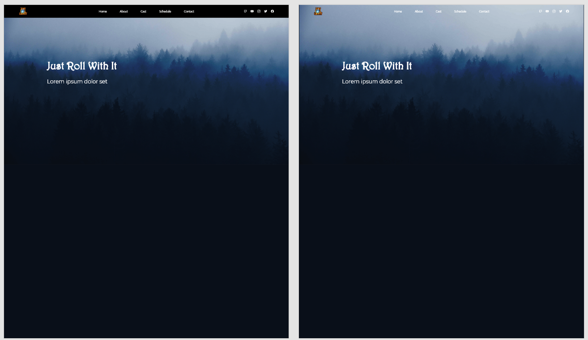
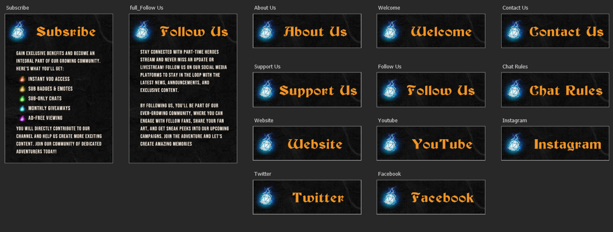
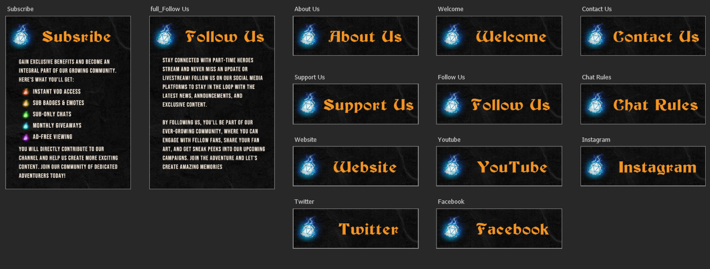

Part‐Time Heroes

Originally, this was only one project for a company I currently work for, called Part‐Time Heroes. This company is the first studio filmed Dungeons & Dragons Livestream company based in Europe. They had asked me to design and create their website, with keeping the mood and feeling of the company in place. Later on, I also made a few other things for the company, such as a flyer, designs for the Twitch overlay, Twitch panels, name tags, a stat overlay video and currently working on more.
When I first heard about this new company and plans for the livestream, I was very curious and excited to be a part of it. Now, well over half a year later, I'm at this company as a player for the show, but also Lead Designer for all the things I've mentioned before.
First up came the design for the website, where the mood and intention of the company was to have an old mage tower / wizard theme. It had to be mysterious and magical, but also give a curious and inviting sense.
The colors and the logo were already established before I worked on the designs, and of course these colors for the company (blue and orange), had to be incorporated into the design, to give the feeling of a branding style.
Process
Website & Flyer
The website was designed in Adobe XD and made in Wix, since they already owned an account and a domain, and it was easier to set it up that way. I pretty quickly had an idea for the design, and found the perfect photo to make it with. The company originally was called Just Roll With It, but later changed the name. In my first ideas it will however still state the old name.
I started off with the photo, which was orignally a bit more on the black and white side, and edited it in Photoshop to have a blue hue to it, matching it with the brand colors. Then I put that photo as background, with a slightly dark overlay on top for readability. I tried out two versions of the header, and soon went for the borderless style. After I made a few versions of my first hero section idea, having a larger or dice iconography, and work with two different fonts (one I used before getting the custom font from the company, which is also used in the logo). I tried multiple fonts and color palettes, to see what would give off the most 'old mage tower' vibes, but I didn't use most of them seeing it just didn't feel right and so I decided to just work with color variations of the blue and orange from the logo, and black and white for optional contrast colors. Soon after, I finished the design in Wix itself, tweaking the last details there.
After the hero section, I continued working on the homepage, adding multiple sections with an about and a schedule section among other things. Making the footer was done very quickly and given the ease of use that Wix provides, it was easy to make something good.
The other pages were the cast, stream (schedule) and vacancies page. The latter one I made at a later stage, and seeing I already had a pretty good idea how things looked, what fonts I used for the others, what spacing, etc., I made that last page directly in Wix. The other pages I did have some iterations for though and I will put those below.
Then the flyer design. The company (under their old name) already had a flyer made by different designers, but in my honest opinion it didn't look as good as it should have. Then at the time of the name change, I suggested for me to make a new design for a flyer, with the new name and new information, which they agreed to.
I started this flyer design with writing down everything that needed to be in the flyer, for example it had to have the logo, links to socials, date and time, and a heading that could grab your attention. Then, I knew I wanted to incorporate the cast members of the company, but wanted it to remain a bit of a mystery, so I decided to use a silhouette. This led to the first version of the flyer, which actually didn't change a whole lot.
I was asked by the company to make a few other versions, with for example a photo as background with the text on top. I warned them that that might not look as well, seeing photo as a background will make it less readable and could be busy for the eyes, but I tried my best anyway. That's where the other version came to be, but it didn't have the same impact and readability as the first one. So, I made a few small iterations on the first design, and did use the color version of the cast member cutout. I did however, make the bottom part one color with a mask, so the text for the socials would be readable.
Twitch & Videos
For Twitch I made multiple things. I started off with making the overlay, that would be used for the livestream. I followed some guides from another big D&D livestream called Critical Role, mainly because they have a similar set up as our cameras and in my opinion it would be the most practical. There is one camera for the Dungeon Master, and two cameras for the players, one on each side of the table. For consistency and eye movement reasons, I put the DM camera top left, with under room for potential announcements, videos, sponsors / givaways, and more. Then there are two wider parts for the two player sides, which is good to have them aligned.
So, with that in mind, I started by making a 1920x1080 canvas and blocking a few areas for where the cams would be. I did try a few other versions with other positions of the cams, but eventually I did still went with the one top left, two longer ones right. Then, I searched online for inspiration and potential usuable background photos, textures or other elements. I also made room at the bottom for logos and sponsor logos.
I made the first few versions with the blue and orange brand colors in mind, and tried a few different ideas. I used cut out screenshots from Critical Role, to see how it would potentially look with people and a backdrop in frame. These first few versions were, as I look back, not the best, but it was a start. They were quite crowded and got overwhelming a bit fast. I asked what the people from the company thought, and they agreed with what I said, but did really like the direction I was going with. So, I made more versions, and more, and more.
Eventually I liked the direction of going with a wood/stone combination, seeing that would also return in the stream from the studio itself. This made me make a few more versions, with slight variations. I tried it with a more wooden texture as main background with stone borders, the other way around, all wood, all stone, but was the happiest with a dark stone background, with grey/dark wood borders in between the screens and a stone frame underneath the camera frames.
The darker background in combination with the lighter studio setting, worked really well to give off a professional and calm look, together with keeping the mysterious old mage tower effect that is part of the companies mood.
Other things I made for Twitch were the name tags in the live stream (not the character art however), the stat cards plus video during the stream, and the Twitch Panels on the About section of the channel.
The name tags and the stat overlay were made in a simultaneous timeline. I knew what information needed for this, seeing I play a lot of the game myself and know what is and is less important for other people to know. This really helped with making the design, it was done rather quickly and didn't really have any iterations for them. I made the designs for both in Adobe Photoshop, and made the video version of the stat cards in Adobe Premiere Pro.
Same goes for the Twitch Panels to be honest, I was given a list of things that needed a design for, came up with a few of my own (I used to stream on Twitch for a little bit), and got to designing it quite fast. I made use of the already existing design concept from the overlay, to use it as a background. Then all what was left was getting the right size and spacing, add the iconography, and add text.
The first version of the Twitch Panels were longer and had the text needed in them, but seeing as Twitch would resize these panels to a 300px width, the text became illegible. So, I just made the designs for the headings, and only a few full version ones, where there wasn't as much text on it. After I was done, I put them up on the Twitch channel, moved them around a bit so they looked good, and finished up!
Website

Flyer


Twitch


 
